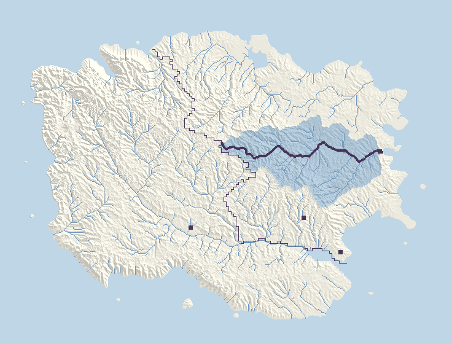

River Lark
River of Bayvarra's dry east, to the sea at Larkmouth
 | |
| Country | Bayvarra |
|---|---|
| Length | 305 km |
| Basin | 16,833 km² |
| Source | about 775 m |
| Mouth | the sea |
| Tributaries | Hollin, Whinburn |
The Lark is the largest river of Bayvarra and the second of the mainland, 305 km long, with a basin of 16,833 km². It rises at about 775 m, crosses the dry east and reaches the sea at Larkmouth, which is named after it.
History
The first British settlers landed at its mouth on 16 February 1824, behind the headland, where they found a sheltered harbour, fresh water and dry grazing land behind it. Larkmouth, the town they built there, was the colony's first capital.
Tributaries
| River | Length | Basin |
|---|---|---|
| Hollin | 105 km | 1,903 km² |
| Whinburn | 77 km | 1,481 km² |
On the river
From the source down to the mouth: Wetherholme, Larkmouth.